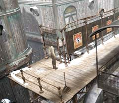
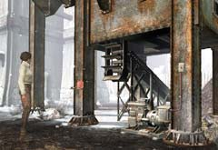
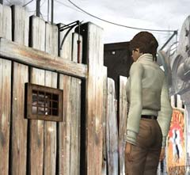

下へ続く門
 ・なぜ閉まっているのか? ・どうすれば開くのか知っている人はいるか? ・見てのとおり、鍵が必要である。下へ行けないのだから、上で調べなくてはならない。
石炭の装置(下)
 ・どうして動かないのか? 調べてみよう。 ・動かすには、何が必要なのか? ・必要なものがそろっても、やることはまだあるはずだ。 ・下の機械はエンジンのようなものである。これが常に動いていなければ、意味がない。
サーコス
・酒場の主人である。 ・エミリオフ大佐と比べ、この地区について詳しいだろ。 ・何か分からないことがあれば、彼に聞くといいだろう。
兄弟
 ・彼らの家には何か重要なものがあるか? ・彼らはすんなりと中に入れてくれるか? ・中に入れてくれないのならば、どうやって侵入すればよいか? |